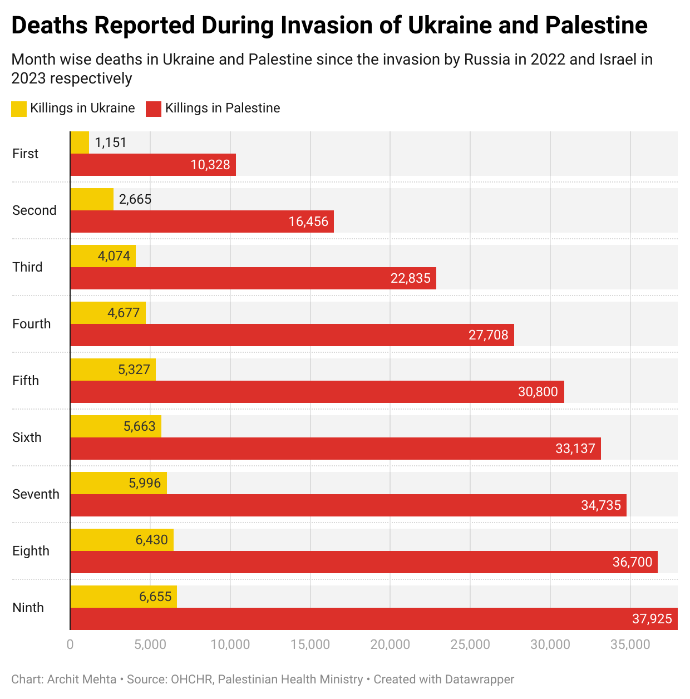
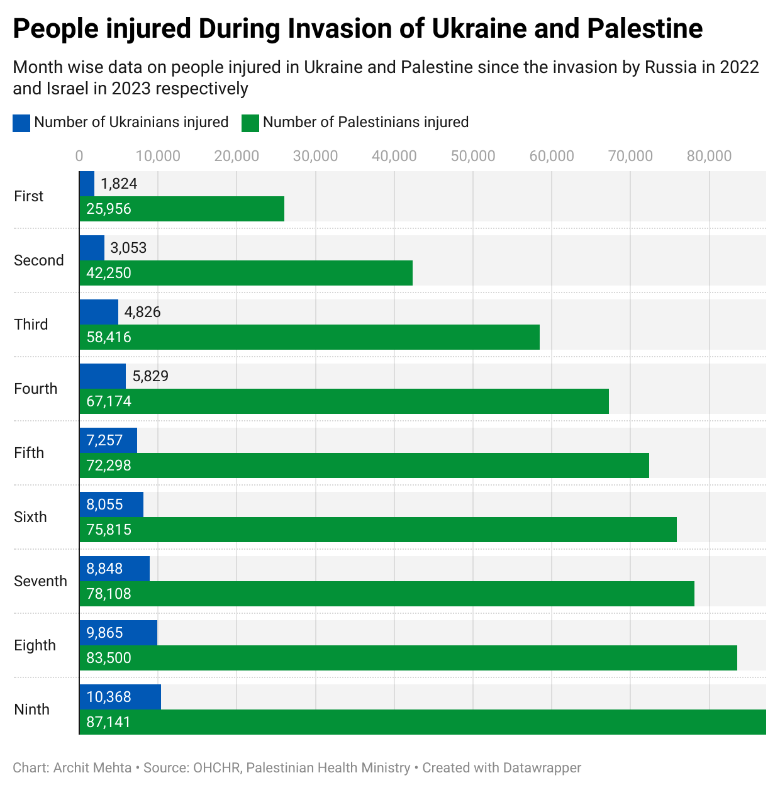
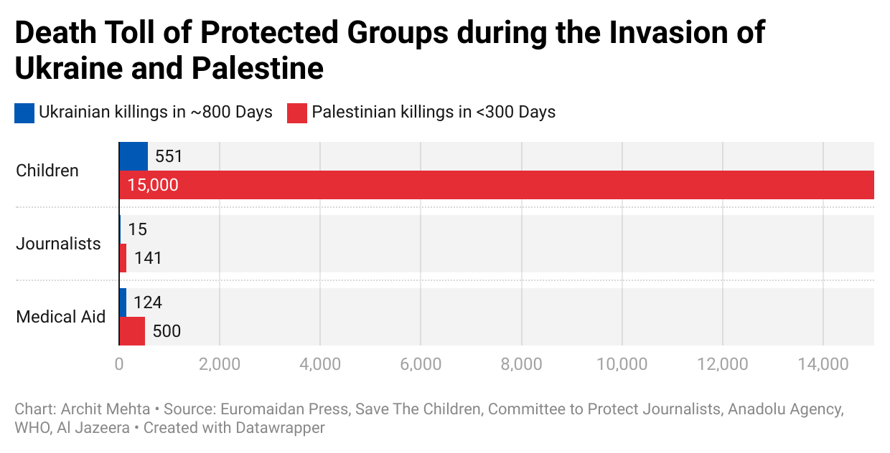

Ukraine-Palestine Invasion: All invasions are brutal. Some are worse.
This thought piece is written as part of the Lede Program at the Columbia School of Journalism. The objecti was to create any graphic using Pandas and DataWrapper.
Earlier in 2024, US-based Pew Research Center published a study on views of Americans on the Russia invasion of Ukraine, ongoing genocide of Palestinian people by the settler-colonial state of Israel, and China's invasion of Taiwan. As per the study, more than half find crisis "personally" important and about three-fourth find them important to "US national interest". (Source: Pew Research Center)
A closer read of the findings shows that Americans are more affected by the conflict in the Middle East. But one does not need to read my thought piece for Pew Research Center's report for that — especially if you are staying in the US. For the past 10-months the world has witnessed genocide being broadcasted on social media, yet people have varying levels of empathy. On occasions, I have been reminded that some people have hate for Palestinians — despite the sufferings under an occupation that has now lasted over 75 years.
In order to capture the scale of violence of Palestinian people by the settler-colonial state of Israel, I am presenting the data available on the casualties from Ukraine and Palestine.
The two chart below compares the number of people killed and injured in Ukraine and Palestine.
 
The chart below shows total number of reported killing projected groups in Ukraine and Palestine.
